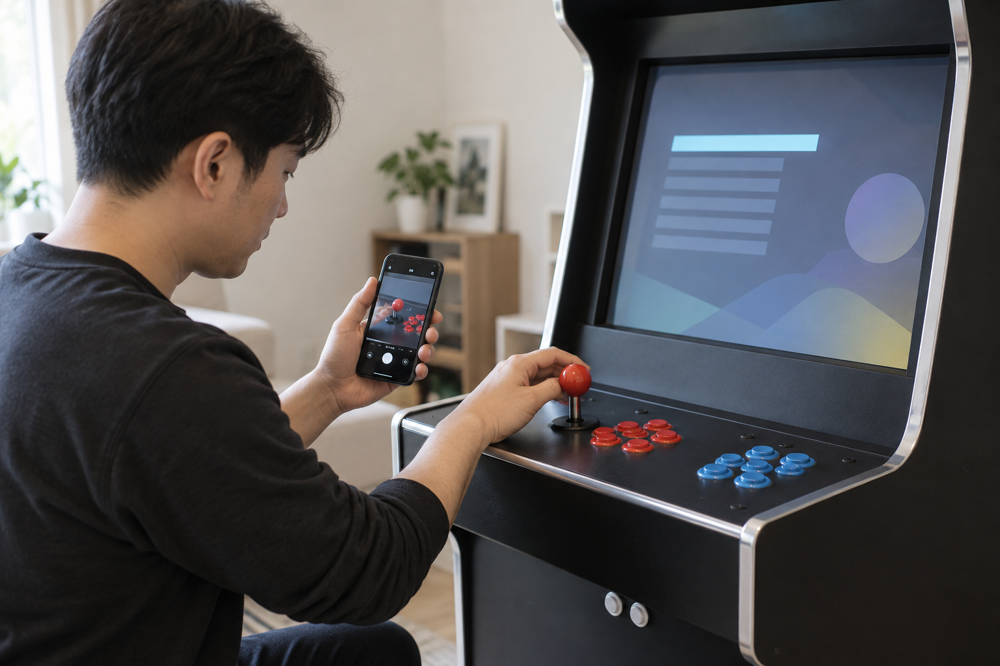
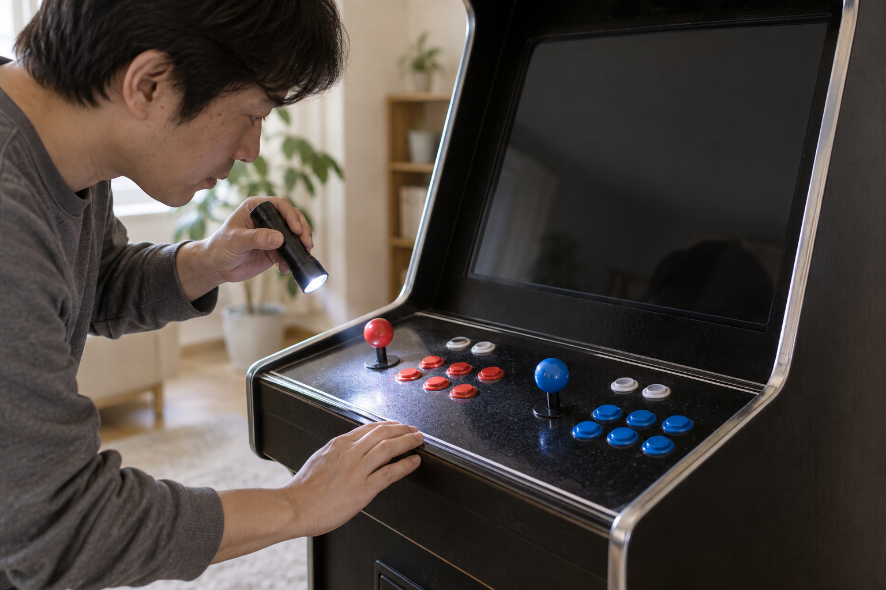

조이스틱이나 버튼에 문제가 생기면 어느 방향 또는 어느 버튼이 어떤 화면에서 반응하지 않는지 먼저 기록하세요. 다른 설정을 연달아 바꾸거나 조작부를 열기 전에 전원을 안전하게 끄고 바깥에서 보이는 상태만 확인한 뒤, 제품명과 증상을 판매자에게 전달하는 편이 좋습니다.

증상을 같은 순서로 다시 확인하세요
게임 선택 화면과 실제 게임 안에서 같은 조작이 모두 반응하지 않는지 확인하세요. 조이스틱은 위·아래·왼쪽·오른쪽을 하나씩 움직이고, 버튼은 세게 연타하지 말고 한 번씩 눌러 어느 입력에서 문제가 반복되는지 적으세요. 특정 게임에서만 나타난다면 게임 이름과 문제가 생긴 장면도 함께 남겨야 합니다.
조작 방향과 버튼 이름, 문제가 나타난 화면을 나눠 기록하면 증상을 정확히 전달하기 쉽습니다.
- 문제가 있는 조이스틱의 방향 또는 버튼 위치
- 메뉴와 게임 화면에서 각각 반응하는지 여부
- 항상 같은지, 가끔 나타나는지 여부
- 처음 확인한 시점과 바로 전에 한 조작

전원을 끄고 바깥 상태만 살펴보세요
확인을 마치면 오락기를 안전하게 켜고 끄는 방법에 따라 종료하고 전원을 끄세요. 버튼이 비스듬히 걸려 있거나 조작부 표면에 이물질이 보이는지는 바깥에서 살펴볼 수 있지만, 틈에 액체를 넣거나 공구로 조작부를 열지는 마세요. 청소가 필요하면 오락기 화면과 조작부 청소 방법의 기본 순서를 먼저 확인하세요.
전원을 끈 뒤에는 조작부를 분해하지 말고 버튼 걸림과 표면 이물질처럼 외부 상태만 확인하세요.
제품명과 부품 구성을 확인하세요
노리박스 제품 목록에는 무선 분리형 조이스틱 세트, 버튼 교체용 공구, 28mm LED 오락기 버튼이 각각 별도 상품으로 안내됩니다. 부품이 판매된다는 사실만으로 현재 오락기에 바로 맞는다고 판단하지 말고, 주문 내역의 정확한 제품명과 조작부 구성을 먼저 확인하세요. 호환 여부와 교체 방법이 확인되지 않은 상태에서는 부품을 주문하거나 분해를 시작하지 않는 편이 좋습니다.
교체용 부품이 보여도 현재 제품과의 호환 여부와 작업 순서를 판매자에게 먼저 확인해야 합니다.
기록을 모아 판매자에게 문의하세요
문의할 때는 제품명, 문제가 있는 조작 위치, 증상이 나타난 화면, 발생 빈도와 이미 확인한 순서를 함께 보내세요. 가능하면 화면과 손이 함께 보이도록 짧은 영상으로 조작 과정을 남기면 입력과 화면 반응을 한 번에 설명할 수 있습니다. 노리박스는 판매 뒤 생기는 오류와 A/S, 부품 문제를 직접 해결해 온 경험을 제품 점검에 반영한다고 브랜드 소개에서 밝히고 있습니다.
제품명과 조작 위치, 재현 순서가 함께 있어야 제품별 확인 방법을 안내받기 쉽습니다.
현재 노리박스 오락실게임기와 조작 관련 제품은 제품자세히보기에서 확인하세요.